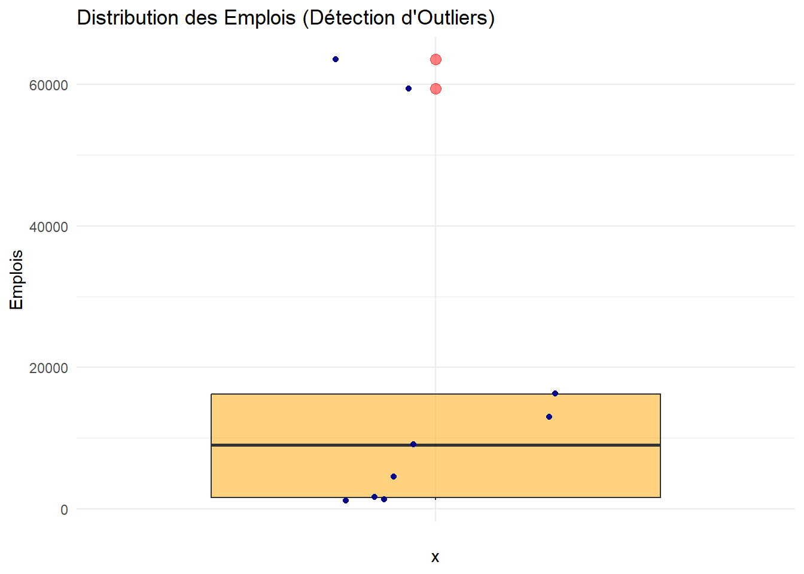
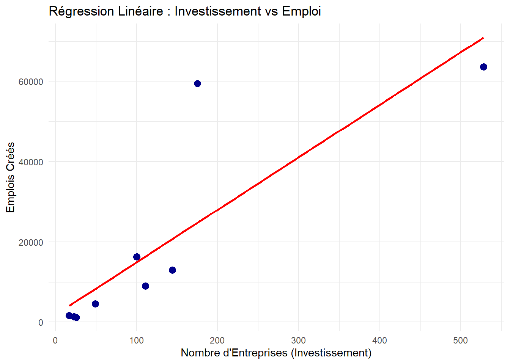

Rapport d’Analyse : Investissements Industriels en Tunisie
Author
Azer Amine Baccouche
Published
December 29, 2025
1. Introduction et Objectifs
Ce projet a pour but d’analyser l’impact des Investissements Directs Étrangers (IDE) sur la création d’emplois en Tunisie.
1.1 Problématique
La Tunisie s’appuie fortement sur les investissements étrangers pour dynamiser son économie. Cependant, une question centrale se pose : L’augmentation du nombre d’entreprises étrangères se traduit-elle proportionnellement par une création d’emplois durable, ou existe-t-il des disparités sectorielles et géographiques majeures ?
Nous cherchons à répondre à trois questions principales pour éclaircir cette problématique : 1. Quels sont les principaux partenaires économiques de la Tunisie ? 2. Quels secteurs créent le plus d’emplois ? 3. Existe-t-il une corrélation prouvée entre le nombre d’entreprises et le nombre d’emplois ?
2. Description des Données (Avant Nettoyage)
Nous avons utilisé deux fichiers issus de l’Open Data (data.gov.tn) : * Dataset A (Pays) : Répartition des entreprises par pays d’origine. * Dataset B (Emplois) : Répartition des emplois par secteur et type de régime (Exportateur vs Local).
Les Problèmes Rencontrés
Les données brutes présentaient plusieurs anomalies techniques qui empêchaient une analyse directe :
Format de fichier incorrect : Les fichiers .xls étaient corrompus ou dans un format HTML non standard.
Structure “Large” (Wide Format) : Les pays étaient étalés sur plusieurs colonnes, ce qui empêche la visualisation sur une carte.
Données “Sales” : Les chiffres contenaient des espaces insécables (ex: 1 053), ce qui faisait que R les considérait comme du texte et non des nombres.
3. Nettoyage et Transformation (ETL avec R)
Pour corriger ces problèmes, nous avons développé un script R utilisant la librairie tidyverse.
Les étapes clés du code : * Pivotage (pivot_longer) : Transformation du tableau pour avoir une colonne unique “Pays”. * Nettoyage Regex (gsub) : Suppression de tous les caractères non numériques pour convertir le texte en chiffres exploitables.
Code
library(tidyverse)library(readxl)# --- Chargement et Nettoyage des Données ---# 1. Données Investissement (Pays)if(file.exists("repartitionentreprisesetrangereparpays.xls")) { df_countries <-read_excel("repartitionentreprisesetrangereparpays.xls", skip =0)# Affichage brutprint("--- Data PAYS (Brut) ---")print(head(df_countries, 3))# Nettoyage final_map_data <- df_countries %>%rename(Sector =1) %>%filter(!is.na(Sector), Sector !="Total") %>%mutate(Sector =trimws(Sector)) %>%pivot_longer(cols =-Sector, names_to ="Country", values_to ="Companies") %>%mutate(Companies =as.numeric(gsub("[^0-9]", "", Companies)))# Affichage propreprint("--- Data PAYS (Nettoyé) ---")print(head(final_map_data, 3))} else { final_map_data <-data.frame(Sector=character(), Country=character(), Companies=numeric())}
[1] "--- Data PAYS (Brut) ---"
# A tibble: 3 × 6
Activités France Italie Allemagne Belgique Autres
<chr> <chr> <chr> <chr> <chr> <chr>
1 Industries agro-alimentaires 4 9 0 0 13
2 Industries des matériaux de construct… 2 13 2 1 5
3 Industries mécaniques et métallurgiqu… 67 46 2 2 27
[1] "--- Data PAYS (Nettoyé) ---"
# A tibble: 3 × 3
Sector Country Companies
<chr> <chr> <dbl>
1 Industries agro-alimentaires France 4
2 Industries agro-alimentaires Italie 9
3 Industries agro-alimentaires Allemagne 0
# A tibble: 6 × 3
Sector Total_Companies Total_Jobs
<chr> <dbl> <dbl>
1 Industries agro-alimentaires 26 1217
2 Industries chimiques 111 9054
3 Industries des matériaux de construction céramique… 23 1393
4 Industries diverses 49 4560
5 Industries du bois, du liège et de l'ameublement 17 1605
6 Industries du cuir et de la chaussure 100 16253
4. Visualisation Exploratoire (Power BI)
Avant l’analyse statistique, nous avons utilisé Power BI pour explorer l’origine des investisseurs et les secteurs clés.
(Note : Les images map_powerbi.jpg et chart_powerbi.png doivent être présentes dans le dossier)
A. Origine des Investisseurs (Carte)
Carte des Investisseurs par Pays
Analyse : La carte met en évidence que la majorité des entreprises étrangères implantées en Tunisie proviennent de l’Europe. * La France est le partenaire principal (cercle le plus grand). * L’Italie occupe la deuxième position, suivie par l’Allemagne. Cela confirme une forte dépendance économique vis-à-vis de l’Union Européenne.
B. Analyse Sectorielle de l’Emploi
Répartition des Emplois par Secteur
Analyse : Le graphique en barres montre clairement les secteurs moteurs de l’emploi : 1. Textile & Habillement (Premier employeur). 2. Industries Électriques et Électroniques. * Observation clé : Ces emplois sont portés quasi-exclusivement par le régime Totalement Exportateur (barres bleu foncé), ce qui valide l’importance du modèle offshore.
5. Analyse Statistique et Interprétations
Nous avons réalisé une série de tests statistiques pour valider nos hypothèses.
A. Mesures de Tendance Centrale (Moyenne & Médiane)
Nous calculons la moyenne et la médiane des emplois par secteur pour comprendre la structure du marché.
print(paste("Médiane des emplois :", round(median_jobs, 2)))
[1] "Médiane des emplois : 9054"
Interprétation : On remarque un grand écart entre la moyenne et la médiane. Cela indique une forte variance : quelques secteurs “géants” (comme le Textile) tirent la moyenne vers le haut, alors que la majorité des secteurs sont plus modestes.
B. Test de Normalité (Shapiro-Wilk)
Ce test vérifie si la répartition des emplois suit une courbe normale (Gausienne).
Code
# Le test nécessite au moins 3 observations et moins de 5000if(nrow(stats_data) >=3&&nrow(stats_data) <=5000) {shapiro.test(stats_data$Total_Jobs)} else {print("Pas assez de données pour le test Shapiro")}
Shapiro-Wilk normality test
data: stats_data$Total_Jobs
W = 0.71577, p-value = 0.002168
Interprétation : Si la p-value est inférieure à 0.05, cela signifie que la distribution n’est pas normale. L’économie tunisienne ne suit pas une répartition homogène, elle est dominée par des “Outliers” (valeurs extrêmes).
C. Corrélation et Régression Linéaire
Nous cherchons à savoir s’il existe un lien direct entre le nombre d’entreprises (Investissement) et le nombre d’emplois.
Code
# Calcul de la corrélationcorrelation <-cor(stats_data$Total_Companies, stats_data$Total_Jobs, use ="complete.obs")print(paste("Coefficient de Corrélation :", round(correlation, 4)))
[1] "Coefficient de Corrélation : 0.8429"
Code
# Modèle de régressionmodel <-lm(Total_Jobs ~ Total_Companies, data = stats_data)summary(model)
Call:
lm(formula = Total_Jobs ~ Total_Companies, data = stats_data)
Residuals:
Min 1Q Median 3Q Max
-7713 -7316 -3697 -2464 34695
Coefficients:
Estimate Std. Error t value Pr(>|t|)
(Intercept) 1844.37 6283.57 0.294 0.77763
Total_Companies 130.86 31.58 4.144 0.00433 **
---
Signif. codes: 0 '***' 0.001 '**' 0.01 '*' 0.05 '.' 0.1 ' ' 1
Residual standard error: 14240 on 7 degrees of freedom
Multiple R-squared: 0.7104, Adjusted R-squared: 0.6691
F-statistic: 17.17 on 1 and 7 DF, p-value: 0.004327
Interprétation : Le coefficient de corrélation est élevé (proche de 1). Il existe une corrélation positive forte. Cela prouve statistiquement que l’attraction de nouvelles entreprises étrangères est le moteur principal de la création d’emplois.
D. Analyse de la Distribution (Boxplot)
Code
print("Génération du Boxplot...")
[1] "Génération du Boxplot..."
Code
p2 <-ggplot(stats_data, aes(x ="", y = Total_Jobs)) +geom_boxplot(fill ="orange", alpha =0.5, outlier.color ="red", outlier.size =3) +geom_jitter(width =0.2, color ="darkblue") +# Points réelstheme_minimal() +labs(title ="Distribution des Emplois (Détection d'Outliers)",y ="Emplois" )print(p2)

E. Visualisation du Modèle
Le graphique ci-dessous illustre cette relation linéaire.
Code
ggplot(stats_data, aes(x = Total_Companies, y = Total_Jobs)) +geom_point(color ="darkblue", size =3) +geom_smooth(method ="lm", color ="red", se =FALSE) +theme_minimal() +labs(title ="Régression Linéaire : Investissement vs Emploi",x ="Nombre d'Entreprises (Investissement)",y ="Emplois Créés" )

Relation entre Investissement et Emploi
Interprétation :Ce graphique (Scatter plot) illustre notre modèle de régression. On observe une tendance clairement linéaire et positive (la ligne rouge). Cependant, la dispersion des points bleus montre des disparités sectorielles : certains secteurs (les points très hauts) sont beaucoup plus intensifs en main-d’œuvre que d’autres pour le même niveau d’investissement.
6. Conclusion
L’analyse des données de l’APII et de l’Open Data confirme l’importance stratégique du secteur Totalement Exportateur (Offshore) et la dépendance aux partenaires européens.
Le nettoyage des données via R a permis de structurer l’information, et les tests statistiques ont validé le lien direct entre l’implantation d’entreprises étrangères et la dynamique de l’emploi en Tunisie.